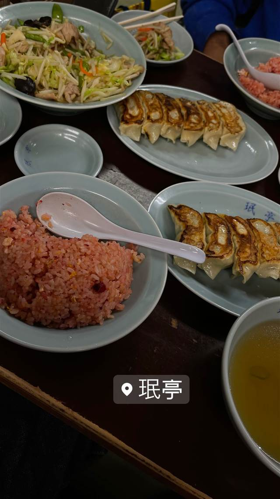

町中華 · 町中華 · 宮崎台
北京 川崎宮崎台店
あんかけ仕立てで熱々が続く、1972年創業の担々麺と餃子
北京
1972年創業、宮崎台駅近くの老舗町中華。あんかけ仕立てで熱々が長続きする独自の担々麺と、皮がパリッとした手作り餃子が地元で長年愛されている。
TRIVIA
豆知識
- 店内には訪れた芸能人のサインが多数飾られている
REVIEWS
世間の評判
3.49食べログ
担々麺と手作り餃子の町中華
- ニンニクが効いた粘性強めのスープの担々麺が人気だという声が多い
- 大きめでもちもちした皮の手作り餃子だという声が多く聞かれる
- 昼は行列ができ20分から40分ほど待つこともあるという声がある
- 店員の対応がそっけなく横柄だと感じる人もいるという指摘もある
食べログ 口コミ730件
| 創業 | 1972年（昭和47年）創業 |
|---|---|
| 看板 | 担々麺（醤油ベースのあんかけスープに挽き肉と搾菜をのせた独自スタイル）と手作り餃子 |
| こだわり | あんかけ仕立てで最後まで熱々を保つ担々麺、皮がパリッとした手作り餃子 |
| どこから | 23区の外れ・近郊 |
| 行くなら | 行列 |
| 営業時間 | 月 休み 火〜日 11:30-14:30、17:00-20:30 |
| 予算 | 昼 ¥1,000～¥1,999 夜 ¥1,000～¥1,999 |
| 場所 | 宮崎台 神奈川県川崎市宮前区宮崎（宮崎台駅近く） |
| メモ | 宮崎台駅から徒歩約3分、ランチや週末夜は行列ができる人気町中華 |
食べたもの：餃子・ラーメン・麻婆豆腐
NEARBY
近い店・同じ系統の店
-
 町中華 東銀座駅
中華 銀座亭
「つけ麺大王」のフランチャイズから3代続くみそチャーシュー
夜 ¥1,000～¥1,999
町中華 東銀座駅
中華 銀座亭
「つけ麺大王」のフランチャイズから3代続くみそチャーシュー
夜 ¥1,000～¥1,999
-
 町中華 大井町
丸吉飯店
目の前で焼き上げる、肉汁あふれる大ぶり手作り餃子
昼 ～¥999 夜 ～¥999
町中華 大井町
丸吉飯店
目の前で焼き上げる、肉汁あふれる大ぶり手作り餃子
昼 ～¥999 夜 ～¥999
-
 町中華 神楽坂駅
龍朋（りゅうほう）
東京三大チャーハンの一つ、ラードでしっとり炒め上げる一皿
昼 ～¥999 夜 ～¥999
町中華 神楽坂駅
龍朋（りゅうほう）
東京三大チャーハンの一つ、ラードでしっとり炒め上げる一皿
昼 ～¥999 夜 ～¥999
-
 町中華 不動前駅
中華 味一 本店
商標登録済みの「背脂炒飯」は宮城県産つや姫を背脂で仕上げる名物
昼 ¥1,000～¥1,999 夜 ¥1,000～¥1,999
町中華 不動前駅
中華 味一 本店
商標登録済みの「背脂炒飯」は宮城県産つや姫を背脂で仕上げる名物
昼 ¥1,000～¥1,999 夜 ¥1,000～¥1,999
-
 町中華 田町駅
中国家庭料理大連
蒲田餃子御三家と同じ八木家が作る羽根つき餃子とあんかけ炒飯
昼 ～¥999 夜 ¥2,000～¥2,999
町中華 田町駅
中国家庭料理大連
蒲田餃子御三家と同じ八木家が作る羽根つき餃子とあんかけ炒飯
昼 ～¥999 夜 ¥2,000～¥2,999
-

町中華 下北沢 珉亭 チャーシューの食紅色がチャーハンに移ってできる独特のピンクチャーハン 昼 ¥1,000～¥1,999 夜 ¥1,000～¥1,999
ONSEN & SAUNA